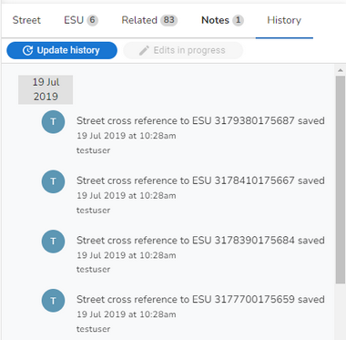

Maintenance history |
Top Previous Next |
|
On both the Property and Street forms there is a History tab which shows the history (changes) made to the currently selected record. The following image shows some Street history:  If you have more than one person editing your gazetteer then clicking the Update history button will make sure you are seeing the latest entries. |